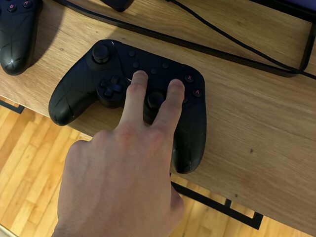
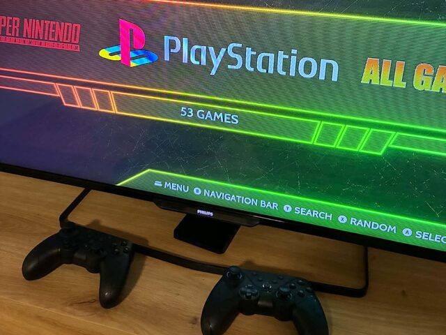

Два џојстика, еден скршен Bluetooth чип и закрпа за кернелот, со ompTwo controllers, one broken Bluetooth chip and a kernel patch, with omp
Ова е продолжение на „Од заборавен ТВ бокс до ретро конзола“. Таму напишав дека џојстиците од 2,4 GHz со USB донгл се посигурни од Bluetooth-от на боксот. Потоа купив два Bluetooth џојстика. 😃
This is a follow-up to “From a forgotten TV box to a retro console”. There I wrote that 2.4 GHz pads with a USB dongle are more reliable than the box's Bluetooth. Then I bought two Bluetooth pads. 😃
Ова е приказната како ги натерав да работат, двата одеднаш, на истиот стар Nexbox A95X-B7N со EmuELEC 4.8. Траеше една ноќ, од 2 до 4:30 наутро, и на крајот вклучуваше поправка на баг во Линукс кернелот. Не сум кернел програмер. Цело време работев со omp, AI агент за програмирање што работи во терминал: тој читаше логови, пишуваше код и се поврзуваше на боксот, а јас притискав копчиња и одлучував кога да не се откажеме.
This is the story of getting them both working at once on the same old Nexbox A95X-B7N running EmuELEC 4.8. It took one night, from 2 to 4:30 in the morning, and ended with a bug fix in the Linux kernel. I'm not a kernel developer. I worked with omp the whole time, an AI coding agent that runs in the terminal: it read logs, wrote code and logged into the box, while I pressed buttons and decided when not to give up.
ЏојстицитеThe pads
Купив два DOYO „Pro 3 cross-platform wireless“: евтини, со RGB светла и распоред како на Switch Pro Controller. Кога ќе се поврзат, се претставуваат токму така: „Pro Controller“, со ознаките на Nintendo (057E:2009). Значи се клонови на џојстикот за Switch, и тоа ќе биде битно.
I bought two DOYO “Pro 3 cross-platform wireless” pads: cheap, with RGB lights and a Switch Pro Controller layout. When they connect, they introduce themselves exactly like that: “Pro Controller”, with Nintendo's IDs (057E:2009). So they're Switch pad clones, and that will matter.
Прво пробав на компјутерот, за да видам дали воопшто работат. Не оди: USB-C кабелот само ги полни (компјутерот не гледа никаков уред), а компјутерот нема Bluetooth. Значи сè се тестираше директно на боксот. Во првиот пост го исклучив Bluetooth-от на боксот, па прво го вклучив пак.
I tried the PC first, to check they work at all. No luck: the USB-C cable only charges them (the PC sees no device), and the PC has no Bluetooth. So all testing happened right on the box. I'd turned the box's Bluetooth off in the first post, so step one was turning it back on.
Кој од двата го заборавив?Which one did I just forget?
Првиот џојстик се спари од менито на EmuELEC без проблем. Вториот не сакаше. Отидов да го „заборавам“ и да пробам пак, ама во листата и двата се викаат „Pro Controller“. Ја погодив погрешната ставка: го избришав првиот.
The first pad paired from EmuELEC's menu just fine. The second wouldn't. I went to “forget” it and try again, but in the list both are called “Pro Controller”. I picked the wrong entry: I deleted the first one.
Од тука настана хаос. Повторното спарување враќаше org.bluez.Error.AlreadyExists и Authentication Failed: боксот сè уште чуваше стар клуч за џојстикот во кернелот, иако самиот уред беше избришан. Помогна рестарт: по рестартот Bluetooth меморијата беше чиста, и ги спаривме еден по еден, од терминал, каде што се гледа секој чекор.
Chaos followed. Re-pairing returned org.bluez.Error.AlreadyExists and Authentication Failed: the box still held an old key for the pad in the kernel, even though the device itself was deleted. A reboot fixed it: after it, the Bluetooth memory was clean, and we paired them one by one from a terminal, where you see every step.


Најкорисниот совет таа ноќ беше и најпростиот. Кога првиот џојстик проработи, omp напиша: „Стави му налепница „1“.“ Двата уреда се викаат исто, па единствената сигурна разлика е MAC адресата (на пример, 98:B6:88:8C:10:60); налепницата е за луѓето.
The most useful advice that night was also the simplest. Once the first pad worked, omp wrote: “Put a “1” sticker on it.” Both devices have the same name, so the only reliable difference is the MAC address (e.g. 98:B6:88:8C:10:60); the sticker is for humans.

Спарен, ама не поврзанPaired, but not connected
Следен проблем: џојстикот се спарува, боксот го зачувува, а сепак не работи. Во менито пишува „Paired“, не „Connected“. Ова е најчестиот проблем со вакви клонови, па вреди да се објасни.
Next problem: the pad pairs, the box saves it, and it still doesn't work. The menu says “Paired”, not “Connected”. This is the most common problem with clones like these, so it's worth explaining.
Спарување значи двата уреда да си разменат клуч. Поврзување значи да се отворат канали низ кои патуваат копчињата. Кај џојстиците тоа се два канала (control и interrupt). Обичните џојстици сами ги отвораат. Овие чекаат боксот да ги отвори, како што прави Switch, а Bluetooth сервисот на Линукс (bluetoothd) тоа не го прави сам. Џојстикот чека околу 20 секунди и ја прекинува врската.
Pairing means the two devices exchange a key. Connecting means opening the channels the button presses travel through. For gamepads that's two channels (control and interrupt). Ordinary pads open them themselves. These wait for the box to open them, as a Switch does, and Linux's Bluetooth service (bluetoothd) doesn't do that on its own. The pad waits about 20 seconds and drops the link.
Како го видовме? Со btmon, алатка што го снима целиот Bluetooth сообраќај на боксот. Во снимката: џојстикот се поврзува, се отвора само каналот за опис на сервисите, па тишина, па „Connection Timeout“. Никој не го отвори каналот за копчиња. Решението е едноставно: веднаш по спарувањето, кажи му на боксот да се поврзе:
How did we see that? With btmon, a tool that records all of the box's Bluetooth traffic. In the recording: the pad connects, only the service-description channel opens, then silence, then “Connection Timeout”. Nobody opened the button channels. The fix is simple: right after pairing, tell the box to connect:
scan on
pair 98:B6:88:8C:10:60
trust 98:B6:88:8C:10:60
connect 98:B6:88:8C:10:60Моја работа беше физичкиот дел. omp пишуваше упатства на мониторот, јас ги правев на телевизорот: исклучи го џојстикот, стави го во режим за спарување (светлата брзо трепкаат), почекај. Набрзо omp напиша и мала Python скрипта за спарување што самата одговара кога џојстикот бара PIN.
My job was the physical part. omp wrote instructions on the monitor and I did them on the TV: turn the pad off, put it in pairing mode (lights blinking fast), wait. Soon omp also wrote a small Python pairing script that answers the pad's PIN request by itself.


Да зборуваме како SwitchSpeaking Switch
И со connect џојстиците одржуваа врска само додека трае спарувањето. Еднаш исклучени, не се враќаа. Тука omp прв пат се откажа: напиша дека EmuELEC (Linux 4.9, без драјвер за Nintendo џојстици) не може да ги задржи и дека со подесувања не се поправа.
Even with connect, the pads only stayed connected during the pairing session. Once off, they never came back. This is where omp gave up for the first time: it wrote that EmuELEC (Linux 4.9, with no Nintendo pad driver) can't keep them and that no setting fixes it.
Прашав: „А што ако го напишеме драјверот?“ omp понуди два пата. А: да се пренесе Линукс драјверот за Nintendo (hid-nintendo, од Linux 5.16 нагоре) на стариот кернел 4.9. Часови работа, а клоновите често паѓаат на неговите проверки. Б: мал помошник на боксот што го прави она што го прави Switch по поврзувањето. Го избрав Б.
I asked: “How about we write the driver?” omp offered two routes. A: port Linux's Nintendo driver (hid-nintendo, Linux 5.16 and newer) to the old 4.9 kernel. Hours of work, and clones often fail its checks. B: a small helper on the box that does what a Switch does after connecting. I picked B.
Switch по поврзувањето му праќа на џојстикот низа кратки команди (subcommands). Протоколот е јавно документиран благодарение на dekuNukem, па помошникот ги праќа истите, директно на уредот (hidraw). Клонот ги прифати сите:
After connecting, a Switch sends the pad a series of short commands (subcommands). The protocol is publicly documented thanks to dekuNukem, so the helper sends the same ones, straight to the device (hidraw). The clone accepted all of them:
| КомандаCommand | Што правиWhat it does | ОдговорReply |
|---|---|---|
0x02 | Информации за уредотDevice info | фирмвер 3.72, тип 3 (Pro Controller)firmware 3.72, type 3 (Pro Controller) |
0x08 00 | Излези од „shipment mode“Leave shipment mode | OK |
0x03 3F | Едноставен режим: стандардни копчиња, мапирањето на EmuELEC остануваSimple mode: standard buttons, EmuELEC's mapping stays valid | OK |
0x48 01 | Вклучи вибрацииVibration on | OK |
0x30 | Светло за играч 1 или 2Player 1 or 2 light | OK |

Зошто Home не го враќаWhy Home never reconnects
„Сега вистинскиот тест, повторно поврзување.“ Не помина. Исклучен џојстик, притиснат Home: снимката на btmon е празна. Џојстикот воопшто не се ни обидува да го најде боксот. Пробавме сè што документацијата нуди:
“Now the real test, reconnecting.” It failed. Pad off, Home pressed: the btmon recording is empty. The pad doesn't even try to reach the box. We tried everything the documentation offers:
- Ја прочитавме меморијата за спарување на џојстикот (флеш, адреса
0x2000, команда0x10). Таму вистинскиот Pro Controller ја запишува конзолата. Кај клонот е празна. - Рачно спарување (
0x01): генерички одговор, а клучот е сите нули. Не е имплементирано. - „Рестартирај се и поврзи се“ (
0x06 01): вели OK, не прави ништо. - Го преименувавме боксот во „Nintendo Switch“. Ништо.
- Read the pad's pairing memory (flash, address
0x2000, command0x10). That's where a real Pro Controller stores its console. On the clone it's empty. - Manual pairing (
0x01): a generic reply, and the key is all zeros. Not implemented. - “Reboot and reconnect” (
0x06 01): says OK, does nothing. - Renamed the box to “Nintendo Switch”. Nothing.
Заклучок: фирмверот на клонот се враќа само на вистински Switch. Не може да се поправи од страна на боксот, па го прифатив: џојстикот го палиш со комбинацијата за спарување, Home + Y. Ги држиш, светлата брзо трепкаат, и по 5–10 секунди светне светлото за играч. Кај Switch клоновите, подобро е да се навикнеш отколку да се бориш.
Conclusion: the clone's firmware only reconnects to a real Switch. The box can't fix that, so I accepted it: you turn the pad on with the pairing combination, Home + Y. Hold them, the lights blink fast, and 5–10 seconds later the player light comes on. With Switch clones, getting used to that beats fighting it.

ПомошникотThe helper
Сето ова omp го спакува во една Python скрипта, switchpad.py, што се пушта при секое палење на боксот (од /storage/.config/custom_start.sh, делот „after“). Таа:
omp packed all of this into one Python script, switchpad.py, that starts every time the box boots (from /storage/.config/custom_start.sh, the “after” section). It:
- бара џојстици во режим за спарување, но само додека се поврзани помалку од два и не трае игра;
- ги спарува и веднаш го отвора каналот за копчиња;
- ги праќа командите од табелата погоре и му го пали светлото за играч 1 или 2;
- го гаси Bluetooth пребарувањето на самиот EmuELEC, бидејќи двете се тепаат за радиото;
- запишува сè во
/storage/.config/emuelec/logs/switchpad.log.
- looks for pads in pairing mode, but only while fewer than two are connected and no game is running;
- pairs them and opens the button channel right away;
- sends the commands from the table above and sets the player 1 or 2 light;
- stops EmuELEC's own Bluetooth scan, because the two fight over the radio;
- logs everything to
/storage/.config/emuelec/logs/switchpad.log.
Прашав дали Python е доволно брз за ваков слаб бокс. Одговорот: помошникот троши околу 9 MB RAM и занемарливо процесор, а не стои меѓу џојстикот и играта. Копчињата одат од кернелот директно до емулаторот, па нема никакво доцнење; помошникот само ги подесува работите и гледа.
I asked whether Python is fast enough for a weak box like this. The answer: the helper uses about 9 MB of RAM and a negligible bit of CPU, and it doesn't sit between the pad and the game. Button presses go from the kernel straight to the emulator, so there's no added lag; the helper only sets things up and watches.
Еден џојстик сега работеше. Вториот, не.
One pad now worked. The second one didn't.
Вториот џојстик и чипот што лажеThe second pad and a chip that lies
Со вклучен џојстик 1, џојстикот 2 се спаруваше, а потоа ништо. Секој сам работеше; заедно, никогаш. omp го вклучи debug логот на bluetoothd, а таму: search_cb() … error updating services: Connection timed out (110). Боксот пробал да го праша вториот џојстик кои сервиси ги има, и не добил одговор.
With pad 1 on, pad 2 would pair, and then nothing. Each worked alone; together, never. omp turned on bluetoothd's debug log, and there it was: search_cb() … error updating services: Connection timed out (110). The box tried to ask the second pad which services it has, and got no answer.
Списокот на врски кажа повеќе. Кернелот ја означува секоја врска со број (handle) и состојба. Џојстикот 1 е на врска 4, состојба 1 („поврзан“). Џојстикот 2 е на врска 6, состојба 7 („сè уште се подесува“). Во таа состојба кернелот не пушта никакви податоци, затоа и пребарувањето истекува.
The connection list said more. The kernel labels each connection with a number (a handle) and a state. Pad 1 is on connection 4, state 1 (“connected”). Pad 2 is on connection 6, state 7 (“still configuring”). In that state the kernel lets no data through, which is why the service search times out.

Еден од последните чекори при подесување на врската е кернелот да го праша Bluetooth чипот колку е долг клучот за шифрирање. Тоа е безбедносна проверка: кернелот не сака врски со прекраток клуч. Во снимката на btmon:
One of the last steps in setting up a connection is the kernel asking the Bluetooth chip how long the encryption key is. It's a security check: the kernel refuses connections with a key that's too short. In the btmon recording:
< HCI Command: Read Encryption Key Size (0x05|0x0008) plen 2
Handle: 6 Address: 98:B6:EB:D1:16:BD
> HCI Event: Command Complete (0x0e) plen 7
Read Encryption Key Size (0x05|0x0008) ncmd 2
Status: Success (0x00)
Handle: 4
Key size: 16Кернелот прашува за врската 6 (џојстик 2). Чипот одговара за врската 4 (џојстик 1). Кернелот го зема одговорот, ја наоѓа врската 4, која е веќе готова, и не прави ништо. Врската 6 засекогаш чека одговор што никогаш нема да дојде.
The kernel asks about connection 6 (pad 2). The chip answers about connection 4 (pad 1). The kernel takes the answer, finds connection 4, which is already done, and does nothing. Connection 6 waits forever for an answer that never comes.
Тоа е баг во фирмверот на Bluetooth чипот во боксот, Realtek прикачен преку UART. Со еден уред никогаш не се гледа, бидејќи тогаш има само една врска за која може да се одговори. Тука omp се откажа по втор пат: напиша дека со вградениот Bluetooth не може два џојстика, ги ограничи помошникот на еден, и предложи USB Bluetooth стик.
That's a bug in the firmware of the box's Bluetooth chip, a Realtek attached over UART. With one device you never see it, because then there's only one connection to answer about. This is where omp gave up for the second time: it wrote that the built-in Bluetooth can't do two pads, limited the helper to one, and suggested a USB Bluetooth stick.
Закрпа за кернелотPatching the kernel
Напишав: „може ли и тој баг да го поправиме“. Одговорот: „Веројатно да, во кернелот на боксот, а не во чипот.“ Новите Линукс кернели имаат знаменце за вакви чипови: кај чип означен како скршен, го прескокнуваат прашањето и претпоставуваат стандарден клуч од 16 бајти. Кернелот 4.9 на боксот тоа го нема. Но Bluetooth делот од кернелот на EmuELEC е модул (bluetooth.ko), посебен фајл што се вчитува при палење, па треба да се смени само тој, не целиот систем.
I typed: “can we fix that bug also”. The answer: “Probably yes, in the box's kernel rather than in the chip.” Newer Linux kernels have a flag for chips like this: for a chip flagged as broken, they skip the question and assume the standard 16-byte key. The box's 4.9 kernel doesn't have that. But EmuELEC's Bluetooth core is a module (bluetooth.ko), a separate file loaded at boot, so only that file has to change, not the whole system.

Тешкиот дел не е самата закрпа, туку модулот да одговара точно на кернелот што веќе работи на боксот. Погрешен модул значи Bluetooth не се вчитува, или полошо, кернелот паѓа. Чекорите:
The hard part isn't the patch itself, it's making the module match the kernel already running on the box exactly. A wrong module means Bluetooth won't load, or worse, the kernel crashes. The steps:
- Истиот изворен код. EmuELEC 4.8 го гради кернелот од CoreELEC
linux-amlogic, на точно одреден commit (ab03043); хашот на симнатата архива одговараше на тој во EmuELEC. Плус 32-те закрпи на EmuELEC и неговата конфигурација за кернелот. - Градење. Во Docker контејнер (Debian bookworm, gcc 12 за ARM64),
make vmlinux modules. Помалку од три минути. - Закрпата. Петнаесетина линии во
net/bluetooth/hci_event.c(подолу). - Проверка пред да се допре боксот. Ознаката на модулот (vermagic) е иста како на оригиналот, а иста е и проверката (CRC) на сите 197 функции од кернелот што модулот ги користи и на сите 43 што ги користат другите Bluetooth модули. Значи се разликува само поправката.
- Инсталација без менување на системот. Преку kernel overlays на EmuELEC (подолу).
- The same source. EmuELEC 4.8 builds its kernel from CoreELEC's
linux-amlogicat one exact commit (ab03043); the downloaded archive's hash matched the one in EmuELEC. Plus EmuELEC's 32 patches and its kernel config. - Build. In a Docker container (Debian bookworm, gcc 12 for ARM64),
make vmlinux modules. Under three minutes. - The patch. About fifteen lines in
net/bluetooth/hci_event.c(below). - Check before touching the box. The module's label (vermagic) matches the original, and so does the checksum (CRC) of all 197 kernel functions the module uses and all 43 that the other Bluetooth modules use. So the only difference is the fix.
- Install without modifying the system. Through EmuELEC's kernel overlays (below).
Закрпата прави едно: кернелот веќе знае за која врска прашал, па нека веруваме на тоа. Ако одговорот на чипот спомнува друга врска, кернелот го запишува тоа во логот и претпоставува стандардни 16 бајти, исто како што старата верзија прави кога чипот враќа грешка, и исто како новите кернели за чипови означени како скршени.
The patch does one thing: the kernel already knows which connection it asked about, so trust that. If the chip's answer names a different connection, the kernel logs it and assumes the standard 16 bytes, the same as the old code does when the chip returns an error, and the same as newer kernels do for chips flagged as broken.
--- a/net/bluetooth/hci_event.c
+++ b/net/bluetooth/hci_event.c
@@ -2547,7 +2547,9 @@
u16 opcode, struct sk_buff *skb)
{
const struct hci_rp_read_enc_key_size *rp;
+ const struct hci_cp_read_enc_key_size *cp;
struct hci_conn *conn;
+ bool mismatch = false;
u16 handle;
BT_DBG("%s status 0x%02x", hdev->name, status);
@@ -2561,6 +2563,20 @@
rp = (void *)skb->data;
handle = le16_to_cpu(rp->handle);
+ /* Some controllers (e.g. the Realtek UART chips on Amlogic TV boxes)
+ * answer with the handle of a different connection once more than one
+ * ACL link exists. The link we asked about would then never leave
+ * BT_CONFIG, so trust the handle from our own command and fall back to
+ * the default key size, as when the command fails.
+ */
+ cp = hci_sent_cmd_data(hdev, HCI_OP_READ_ENC_KEY_SIZE);
+ if (cp && le16_to_cpu(cp->handle) != handle) {
+ BT_ERR("%s key size reply for handle %u, requested %u",
+ hdev->name, handle, le16_to_cpu(cp->handle));
+ handle = le16_to_cpu(cp->handle);
+ mismatch = true;
+ }
+
hci_dev_lock(hdev);
conn = hci_conn_hash_lookup_handle(hdev, handle);
@@ -2571,7 +2587,7 @@
* (which is the same we do also when this HCI command isn't
* supported.
*/
- if (rp->status) {
+ if (rp->status || mismatch) {
BT_ERR("%s failed to read key size for handle %u", hdev->name,
handle);
conn->enc_key_size = HCI_LINK_KEY_SIZE;Системот на EmuELEC е слика само за читање, па модулот не се копира врз оригиналот. Наместо тоа, EmuELEC има механизам наречен kernel overlays: .conf фајл во /storage/.cache/kernel-overlays/ покажува на папка со модули, а при палење модулите од таа папка се вчитуваат наместо оригиналните. За враќање назад, бришеш еден фајл и рестартираш.
EmuELEC's system is a read-only image, so the module isn't copied over the original. Instead, EmuELEC has a mechanism called kernel overlays: a .conf file in /storage/.cache/kernel-overlays/ points to a folder of modules, and at boot the modules from that folder load instead of the originals. To undo it, delete one file and reboot.
$ modinfo -F vermagic bluetooth.ko
4.9.269 SMP preempt mod_unload modversions aarch64
$ cat /storage/.cache/kernel-overlays/50-bt-keysize-fix.conf
/storage/switchpad/kernel-overlay
# the patched module
/storage/switchpad/kernel-overlay/lib/modules/4.9.269/kernel/net/bluetooth/bluetooth.koАко некое ажурирање на EmuELEC донесе друга верзија на кернелот, модулот едноставно се игнорира (папката е за 4.9.269). Ако верзијата остане иста, а кернелот се смени, модулот повеќе нема да одговара, па пред ажурирање избриши го .conf фајлот, за секој случај. Ја вратив границата на помошникот на два џојстика, ја извадив картичката, ја ставив во боксот, ги вклучив двата.
If an EmuELEC update brings a different kernel version, the module is simply ignored (the folder is for 4.9.269). If the version stays the same but the kernel changes, the module won't match anymore, so delete the .conf file before updating, just in case. I set the helper's limit back to two pads, pulled the card, put it in the box and turned both pads on.


Заклучи го пакLock it again
Во првиот пост го заклучив боксот: firewall вклучен, SSH исклучен. За omp да може да работи на боксот, двете ги отворав привремено (SSH во менито, systemctl stop iptables во терминалот на боксот). На крајот omp ги врати: RULES=public и ee_ssh.enabled=0, па проба да се поврзе и доби „Connection refused“. Тоа е точно она што сакаш да го видиш.
In the first post I locked the box down: firewall on, SSH off. For omp to work on the box I opened both temporarily (SSH from the menu, systemctl stop iptables in the box's terminal). At the end omp put them back: RULES=public and ee_ssh.enabled=0, then tried to connect and got “Connection refused”. That's exactly what you want to see.
Една мала паника успат: терминалот на боксот замрзна и бев сигурен дека го „брикнав“. Само рестарт.
One small panic along the way: the box's terminal froze and I was sure I'd bricked it. Just a reboot.

Како изгледа работата со ompWhat working with omp looks like
omp работеше на компјутерот и преку SSH на боксот. Тој читаше логови, ги снимаше и читаше Bluetooth пакетите, пишуваше скрипти, го најде и го изгради кернелот, ги провери модулите. Јас бев рацете: ги палев и гасев џојстиците, куцав на тастатурата на боксот кога SSH беше исклучен, ги вадев и ставав картичката.
omp ran on the PC and reached the box over SSH. It read logs, recorded and read Bluetooth packets, wrote scripts, found and built the kernel, and checked the modules. I was the hands: turning pads on and off, typing on the box's keyboard when SSH was off, pulling and inserting the card.
Најважното: omp двапати ми кажа дека не може. И двапати решението беше едно прашање од мене: „а ако го напишеме драјверот?“ и „може ли и тој баг да го поправиме?“. Агентот е добар во барање и поправање, ама кога да не се откажеме, тоа сепак го одлучував јас.
The key part: omp told me twice that it couldn't be done. Both times the way forward was one question from me: “how about we write the driver?” and “can we fix that bug also?”. The agent is good at digging and fixing, but deciding when not to give up was still my call.
Сликите од разговорот се од извоз на сесијата (omp --export прави HTML од целиот разговор).
The chat screenshots come from an export of the session (omp --export turns the whole conversation into HTML).
Што научивWhat I learned
- „Спарен“ не значи „поврзан“. Ако џојстикот е спарен, а не работи, поврзи го рачно веднаш по спарувањето.
- Евтините клонови на Switch џојстик зборуваат Switch само до половина. Нека не те изненади ако Home не ги враќа.
- Два уреда со исто име: залепи налепници и работи со MAC адресите.
- Кога нешто „само не работи“, сними го сообраќајот (
btmon). Таму се гледа кој престанал да зборува. - Баг во стар кернел некогаш се поправа со еден модул, ако го изградиш од истиот код и истата конфигурација и провериш vermagic и CRC пред да го вчиташ.
- Отвори го боксот само колку треба, па заклучи го пак.
- “Paired” doesn't mean “connected”. If a pad is paired but dead, connect it by hand right after pairing.
- Cheap Switch pad clones only speak half of Switch. Don't be surprised if Home doesn't bring them back.
- Two devices with the same name: add stickers and work with MAC addresses.
- When something “just doesn't work”, record the traffic (
btmon). That shows who stopped talking. - A bug in an old kernel can sometimes be fixed with one module, if you build it from the same source and config and check vermagic and CRCs before loading it.
- Open the box only as much as you need, then lock it again.
Што следуваWhat's next
- Подолги игри во двајца, да видам дали врската држи со часови.
- Hotkey Enable на Select на двата џојстика.
- Можеби да ја понудам закрпата на EmuELEC, за другите со ист бокс да не мора да градат модул.
- Longer two-player sessions, to see whether the link holds for hours.
- Hotkey Enable on Select on both pads.
- Maybe offer the patch to EmuELEC, so others with the same box don't have to build a module.